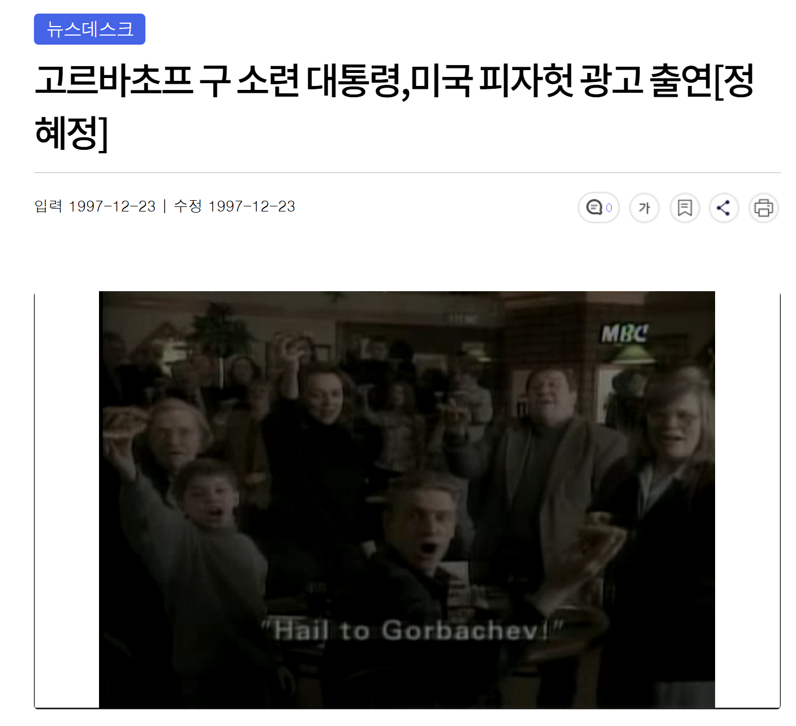

미하일 고르바초프
소련 서기장 출신였던 고르바초프가 소련 경제 붕괴하고
보리스 옐친한테 정치적 입지를 다 뺏겨버린 백수 상태가 되버리자
어떻게든 먹고 살기위해서 피자헛 광고 출현해서 자본주의 맛을 봄

미하일 고르바초프
소련 서기장 출신였던 고르바초프가 소련 경제 붕괴하고
보리스 옐친한테 정치적 입지를 다 뺏겨버린 백수 상태가 되버리자
어떻게든 먹고 살기위해서 피자헛 광고 출현해서 자본주의 맛을 봄
제니 이전 모델이 고르바초프였구나
소시민서기장!!!
피자먹고싶네 갑자기
고르바초프....너무 급햇음. 그리고 소련인민들이 현명할꺼라고 생각하면 안됫음.
붉은 인간의 최후(세컨드핸드타임)읽고있는데 책한권 추천해줘라
초코바
한반도 할배
아 먹고는 살아야제
TMI) 고르바초프는 2022년까지 살아있었다
고르바초프를 품기에는 러시아의 수준 자체가 너무 미개했음
러시아가 미개하다기 보다 너무 급진적으로 개혁을 한게 문제가 터진거 세계인들 시각에서 보면 냉전 종식시킨면만 보는데 러시아인 입장에서 보면 병쉰같이 개혁해서 그나마 숨 붙어있던 경제 내정에 막타쳐서 다 말아먹은 인물로 보이는거지
안드로포프가 건강만 했더라도…
이거 근황임?
ㅇㅇ 요즘 티비틀면 나옴
글라스노스트를 했더니 그 안에 똥덩어리가 들어있을 줄 누가 알았겠냐.
망국 직전에 소련을 물려받은 비운의 지도자
어떻게든 살려볼려고 점진적 개혁이 아닌 급진적 개혁을 하다가 너무 서두른 탓에 결국 붕괴를 재촉하고 말았다.
그는 훌륭한 국제적 정치가이자 중요한 정치 개혁가였지만, 성공적인 국가 경영자는 아니었다.
소련 시민들 입장에서
쟤만한 매국노 없을거야
먹고 살기 어려운 정도까진 아니고 자기가 운영하던 재단에 돈이 없어서 출연했다고함
나중엔 백혈병 아이들 지원자금 마련한다고 루이비통 광고도 찍음